Обзор
CRYENGINE имеет различные встроенные инструменты отладки и профилирования, которые помогают находить и устранять проблемы, а также проблемы с производительностью. В этой статье описаны некоторые из наиболее широко используемых инструментов.
Базовая функциональность ведения журнала
log_IncludeTime
Toggles time stamping of log entries.
Usage: log_IncludeTime [0/1/2/3/4/5]
0=off (default)
1=current time
2=relative time
3=current+relative time
4=absolute time in seconds since this mode was started
5=current time+server time
Основная информация об активе
Окно отчета об ошибках
В окне отчета об ошибках отображаются сообщения об ошибках, возникших из-за отсутствующих объектов и поврежденных ресурсов. Доступ к консоли также можно получить в разделе Инструменты → Проверить уровень на наличие ошибок.
SaveLevelStats
Calling this command creates multiple XML files with level statistics.
The data includes file usage, dependencies, size in more/disk.
The files can be loaded in Excel.
Статистика вашего уровня сохраняется в папке уровня, а дополнительная информация сохраняется в папке уровня. GameSDK/TestResults папка.
Система
MemInfo
Отображает текущую информацию о памяти. Полезно для поиска утечек памяти.
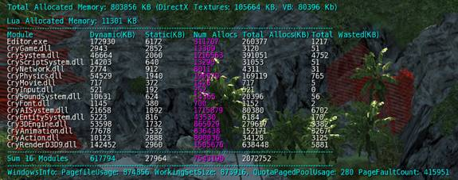
MemInfo
Display memory information by modules
1=on, 0=off
MemStats
Отображает подробную информацию о каждой вызываемой в данный момент функции, отсортированную по размеру. Это представление содержит много подробной информации, хотя в некоторых случаях данные могут быть слегка искажены.
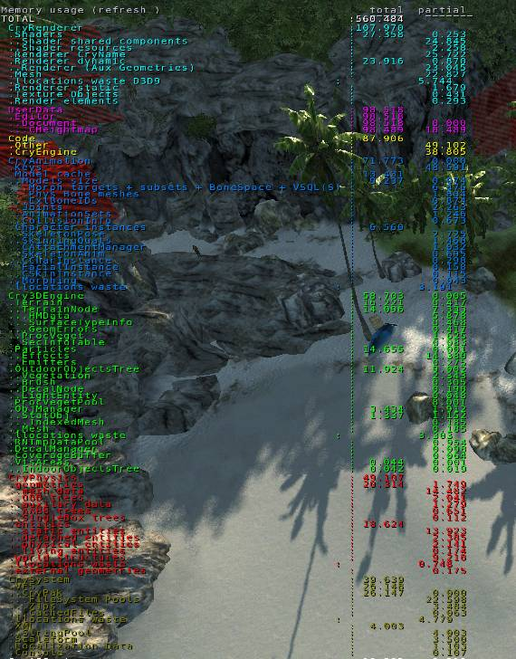
MemStats
0/x=refresh rate in milliseconds
Use 1000 to switch on and 0 to switch off
Usage: MemStats [0..]
Профиль
Команда консоли профиля содержит различные способы доступа к информации о времени и потреблении памяти в CRYENGINE. Чтобы получить доступ к списку представлений профилирования, используйте команду профиль командная строка.
| Команда | Описание | Изображение |
|---|---|---|
| Профиль 1 | Самоценность - Отображает количество выполнений на кадр. Общее значение минус итоговые суммы всех подразделов, например, если функция A занимает в общей сложности 5 мс для выполнения, но вызывает функцию B(), выполнение которой занимает 2 мс, тогда собственное время функции A() будет 3 мс. Вы можете использовать Блокировка прокрутки клавиша для приостановки или продолжения записи профилирования и Вверх и Вниз Клавиши со стрелками для перемещения по строкам. | 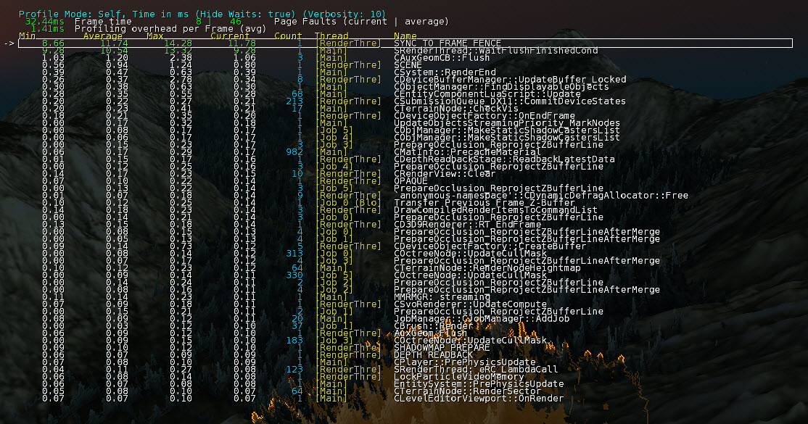 |
| Профиль 2 | Общая стоимость - Отображает общую продолжительность/распределения от начала до конца. Вы можете использовать Блокировка прокрутки клавиша для приостановки или продолжения записи профилирования и Вверх и Вниз Клавиши со стрелками для перемещения по строкам. | 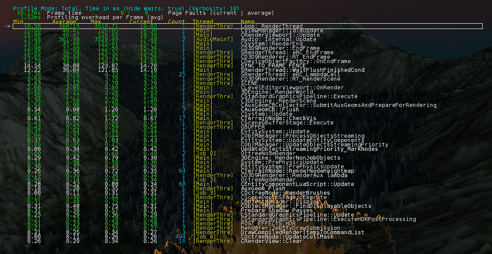 |
| Профиль 3 | Считает - Количество выполнений на кадр. Вы можете использовать Блокировка прокрутки клавиша для приостановки или продолжения записи профилирования и Вверх и Вниз Клавиши со стрелками для перемещения по строкам. | 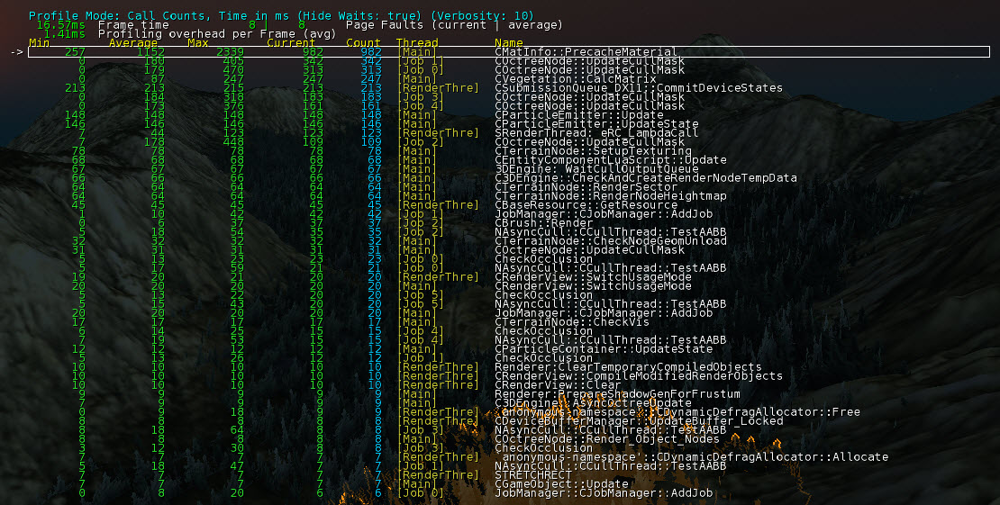 |
| Профиль 4 | Пики - Показывает разделы, для которых собственное значение в последнем кадре превысило среднее значение на величину, указанную в CVar. profile_peak_tolerance. | 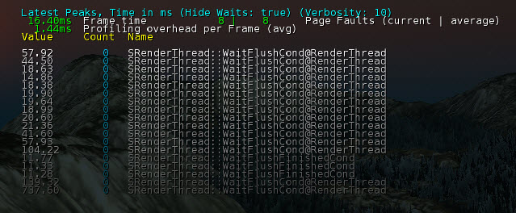 |
| Профиль 5 | Информация о подсистеме - Показывает сумму собственного времени и соответствующий процент времени кадра на систему. Возможно более 100%, поскольку время суммируется по всем потокам. | 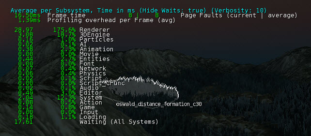 |
| Профиль 6 | Информация о теме - Показывает время, которое каждый поток проводит в активном (рабочем) и ожидающем разделах, а также соответствующие проценты времени кадра. | 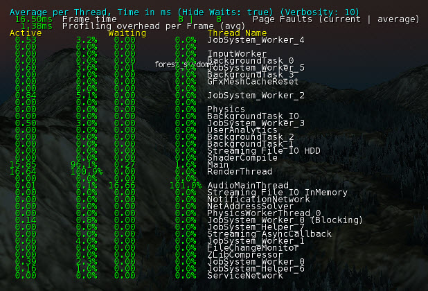 |
| Профиль 7 | Минимальный вид - Это показывает только заголовок. | 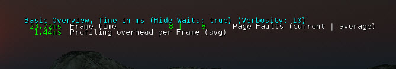 |
Profile_smooth
Это регулирует «сглаживание» чисел, отображаемых на дисплеях профиля. Увеличение этого значения приведет к уменьшению неустойчивости показанных значений.
profile_smooth
Profiler exponential smoothing interval (seconds)
Profile_peak
Это устанавливает нижний предел для значений, отображаемых в столбце последних пиков. Чем ниже значение, тем больше пиков отображается.
profile_peak
Profiler Peaks Tolerance in Milliseconds
sys_enable_budgetmonitoring
Отображает информацию о бюджете памяти для вашего уровня, для видео, времени кадра, звуковых каналов, звуковой памяти и вызовов отрисовки. Индивидуальные бюджеты можно настроить извне, используя консольные команды, начинающиеся с sys_budget_ (введите его в консоль и нажмите Tab, чтобы просмотреть список). Когда полоса достигнет крайнего правого края, соответствующий текст начнет мигать, предупреждая о превышении бюджета. Как указано в приведенном тексте, проверьте это в чистом игровом режиме, так как версия игры для редактора может давать ложные результаты.
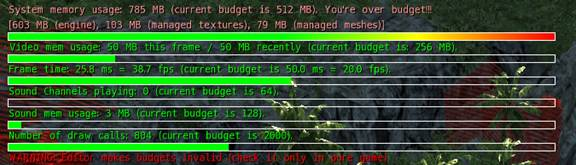
sys_enable_budgetmonitoring
Enables budget monitoring. Use #System.SetBudget( sysMemLimitInMB, videoMemLimitInMB,
frameTimeLimitInMS, soundChannelsPlaying ) or sys_budget_sysmem, sys_budget_videomem
or sys_budget_fps to set budget limits.
profile_allthreads
profile_allthreads
Enables profiling of non-main threads.
3D-движок
e_DebugLights
Отладочный режим рисования, визуализирующий количество динамических источников света, влияющих на часть геометрии static. Это важно, поскольку чем больше источников света влияет на объект, тем чаще его необходимо визуализировать. для создания карт теней, выполнения освещения (при использовании неотложенного освещения) и т. д. Используя эту информацию, в идеале вам следует разместить источники света таким образом, чтобы получить максимальную отдачу от вложенных средств. Это означает, что используйте как можно меньше источников света, чтобы реализовать определенные условия освещения или настроение. Этот режим отладки рисования может помочь обнаружить поверхности, на которые влияет больше источников света. Это также позволяет дизайнерам легко проверить, почему некоторые огни могут мерцать на определенных поверхностях.
Он использует разные цвета для объектов, на которые воздействует разное количество источников света.
- черный: 0
- синий: 1
- зеленый: 2
- красный: 3 или более
- мигает желтым: больше, чем максимально разрешенный
e_DebugLights
Use different colors for objects affected by different number of lights
black:0, blue:1, green:2, red:3 or more, blinking yellow: more then the maximum enabled
e_Lods
e_Lods контролирует использование LOD или объектов уровня детализации на вашем уровне. Если вы подозреваете, что геометрия может вызывать проблемы, просто отключите использование объектов LOD (версии объектов с низкой детализацией и меньшим количеством полигонов), введя e_lods 0.
Все объекты теперь будут использовать версию с максимальной детализацией LOD.
На рисунке ниже с отключенным e_lods виден объект с высокой детализацией. При включении e_lods соответствующим образом рассчитанная нижняя детализация LOD показывает:
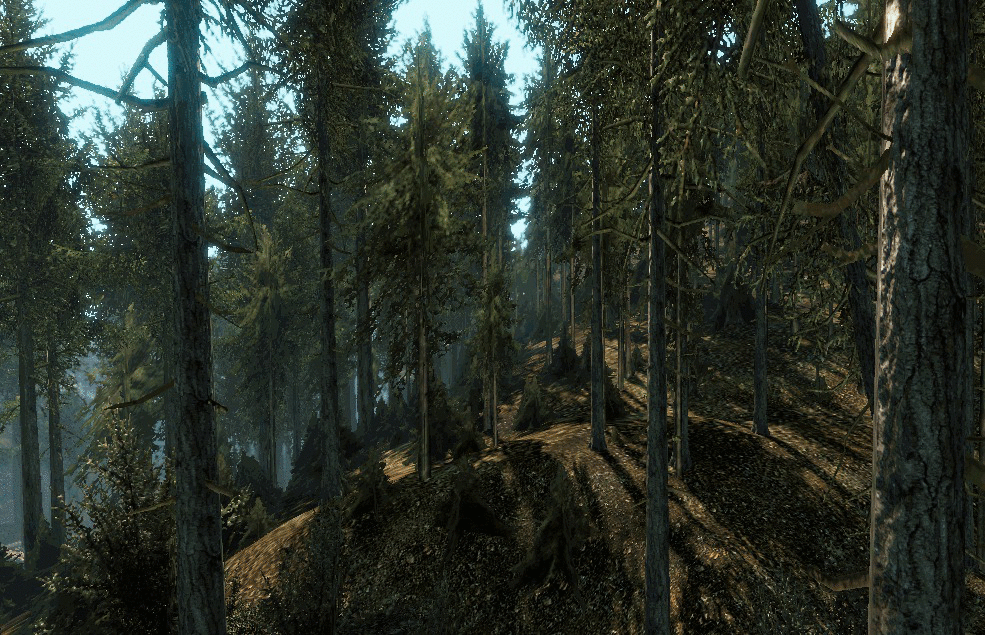
e_Lods
Load and use LOD models for static geometry
e_LodMin
e_LodMin
Min LOD for objects
e_LodMax
e_LodMax
Max LOD for objects
sys_ProfileLevelLoading
sys_ProfileLevelLoading
Output level loading stats into log
0 = Off
1 = Output basic info about loading time per function
2 = Output full statistics including loading time and memory allocations with call stack info
Рендерер
r_DisplayInfo
Отображает различную важную информацию для отладки, такую как положение и угол камеры, номер сборки и название загруженного уровня.
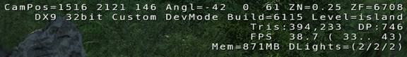
r_DisplayInfo
DUMPTODISK, RESTRICTEDMODE
Toggles debugging information display.
Usage: r_DisplayInfo [0=off/1=show/2=enhanced]
r_MeasureOverdraw
Эта опция активирует специальный режим рендеринга, который визуализирует стоимость рендеринга на пиксель по цвету. Как вы можете заметить, эта команда показывает накопленное количество инструкций на пиксель, а не только перерисовку.
r_MeasureOverdraw
Activate a special rendering mode that visualize the rendering cost of each pixel by color.
0=off,
1=pixel shader instructions,
2=pass count,
3=vertex shader instructions,
4=overdraw estimation with 360 Hi-Z,
Usage: r_MeasureOverdraw [0/1/2/3/4]
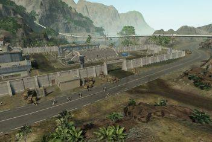
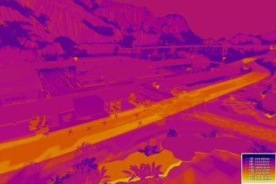
r_DebugLights
r_DebugLights
Display dynamic lights for debugging.
Usage: r_DebugLights [0/1/2/3]
Default is 0 (off). Set to 1 to display centers of light sources,
or set to 2 to display light centers and attenuation spheres, 3 to get light properties to the screen
r_ShowMT
r_ShowMT
Shows render multithreading graphs.
Usage: r_ShowMT [0/1]
Default is 0 (off).
r_DebugRefraction
r_DebugRefraction
Debug refraction usage. Displays red instead of refraction
Usage: r_DebugRefraction
Default is 0 (off)
r_PostProcessEffects
Эта CVar позволяет полностью отключить эффекты постобработки, чтобы выяснить, вызывают ли они конкретную проблему. Также можно отобразить активные в данный момент эффекты постобработки.
r_PostProcessEffects
Enables post processing special effects.
Usage: r_PostProcessEffects [0/1/2]
Default is 1 (enabled). 2 enables and displays active effects
r_TexelsPerMeter
r_TexelsPerMeter
Enables visualization of the color coded "texels per meter" ratio for objects in view.
The checkerboard pattern displayed represents the mapping of the assigned diffuse
texture onto the object's uv space. One block in the pattern represents 8x8 texels.
Usage: r_TexelsPerMeter [n] (where n is the desired number of texels per meter; 0 = off)
r_ProfileShaders
Эта опция отображает информацию о профилировании для отображаемых в данный момент шейдеров.
r_ProfileShaders
Enables display of render profiling information.
Usage: r_ProfileShaders [0/1]
Default is 0 (off). Set to 1 to display profiling
of rendered shaders.
r_TexLog
Эта опция сохраняет информацию о текстурах в текстовый файл в корне папки игры.
r_TexLog
Configures texture information logging.
Usage: r_TexLog #
where # represents:
0: Texture logging off
1: Texture information logged to screen
2: All loaded textures logged to 'UsedTextures.txt'
3: Missing textures logged to 'MissingTextures.txt
Физика
p_draw_helpers
P_draw_helpers — это команда, которая обеспечивает доступ к различным режимам просмотра физики объектов вашего уровня.
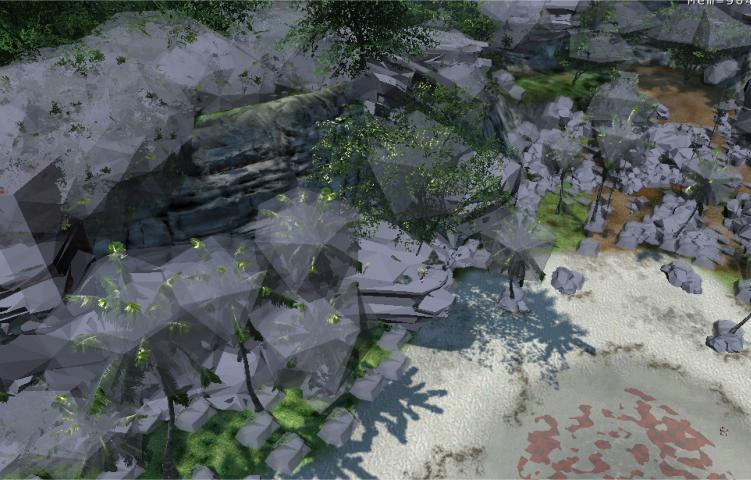
p_draw_helpers
Same as p_draw_helpers_num, but encoded in letters
Usage [Entity_Types]_[Helper_Types] - [t|s|r|R|l|i|g|a|y|e]_[g|c|b|l|t(#)]
Entity Types:
t - show terrain
s - show static entities
r - show sleeping rigid bodies
R - show active rigid bodies
l - show living entities
i - show independent entities
g - show triggers
a - show areas
y - show rays in RayWorldIntersection
e - show explosion occlusion maps
Helper Types
g - show geometry
c - show contact points
b - show bounding boxes
l - show tetrahedra lattices for breakable objects
j - show structural joints (will force translucency on the main geometry)
t(#) - show bounding volume trees up to the level #
f(#) - only show geometries with this bit flag set (multiple f's stack)
Example: p_draw_helpers larRis_g - show geometry for static, sleeping, active, independent entities and areas
p_debug_joints
Когда p_draw_helpers включен, эта переменная CVar будет показывать любое напряжение в физических соединениях внутри хрупкого объекта.
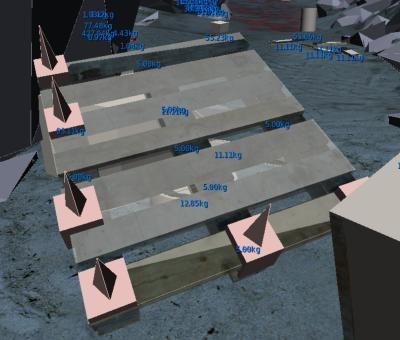
p_debug_joints
If set, breakable objects will log tensions at the weakest spots
p_profile_entities
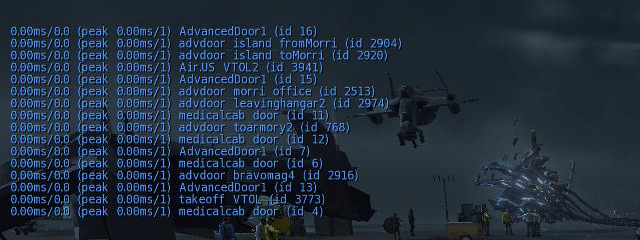
p_profile_entities
Enables per-entity time step profiling
p_profile_functions
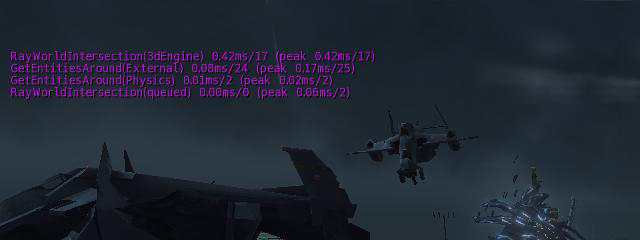
p_profile_functions
Enables detailed profiling of physical environment-sampling functions
AI
ai_DebugDraw
Если установлено, отображается любая отладочная информация AI, активная в данный момент на вашем уровне.
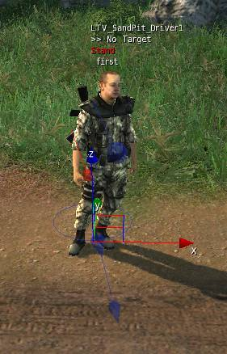
ai_DebugDraw
Toggles the AI debugging view.
Usage: ai_DebugDraw [-1/0/1]
Default is 0 (minimal), value -1 will draw nothing, value 1 displays AI rays and targets
and enables the view for other AI debugging tools.
Поддерживаемые значения CVar
ai_DebugDraw | Описание |
|---|---|
-1 | Только предупреждения/ошибки и отладочная отрисовка системы интересов. |
0 | Нет отрисовки AI |
1 | Базовый отладочный рисунок AI |
71 | Нарисуйте все запрещенные зоны (в том числе автоматически генерируемые) |
72 | Нарисуйте ошибки на графике (проблемные места выделены кружками) |
74 | Нарисуйте весь граф навигации (может быть очень медленно) |
79 | Нарисуйте граф навигации рядом с игроком (в пределах 15 м от камеры; быстрее 74) |
80 | Нарисовать отмеченные узлы (во время A*) |
81 | Рассчитайте (при необходимости), затем нарисуйте 3D (объемные) скрытые места. |
82 | Нарисуйте 3D (объемные) скрытые места |
85 | Рисование крутых склонов (определяется ai_steep_slope_up_value и ai_steep_slope_across_value) |
90 | Нарисуйте полетную навигацию в радиусе 200 м от игрока. |
179 | То же, что 79, но также показывает центры ребер триангуляции. |
279 | То же, что и 179, но также показывает информацию о глубине воды. |
1017 | Визуализируйте навигационные ссылки узла, который включает в себя сущность «тест». |
Настройка ai_DebugDraw to one позволит визуализировать следующие переменные:
ai_DrawStats
ai_DrawStats
Toggles drawing stats (in a table on top left of screen) for AI objects within specified range.
Will display attention target, goal pipe and current goal.
ai_StatsTarget
ai_StatsTarget
Focus debugging information on a specific AI
Display current goal pipe, current goal, subpipes and agentstats information for the selected AI agent.
Long green line will represent the AI forward direction (game forward).
Long red/blue (if AI firing on/off) line will represent the AI view direction.
Usage: ai_StatsTarget AIName
Default is 'none'. AIName is the name of the AI
on which to focus.
ai_DebugTacticalPoints
Регистрирует активность тактических точек с statsTarget и отображает соответствующий отладочный чертеж.
ai_DebugTacticalPoints
DUMPTODISK
Display debugging information on tactical point selection system
ai_AllTime
ai_AllTime
Displays the update times of all agents, in milliseconds.
Usage: ai_AllTime [0/1]
Default is 0 (off). Times all agents and displays the time used updating
each of them. The name is colour coded to represent the update time.
Green: less than 1 ms (ok)
White: 1 ms to 5 ms
Red: more than 5 ms
You must enable ai_DebugDraw before you can use this tool.
ai_DrawBadAnchors
ai_DrawBadAnchors
Toggles drawing out of bounds AI objects of particular type for debugging AI.
Valid only for 3D navigation. Draws red spheres at positions of anchors which are
located out of navigation volumes. Those anchors have to be moved.
0 - off, 1 - on
ai_DrawFormations
ai_DrawFormations
Draws all the currently active formations of the AI agents.
Usage: ai_DrawFormations [0/1]
Default is 0 (off). Set to 1 to draw the AI formations.
ai_DrawModifiers
ai_DrawModifiers
Toggles the AI debugging view of navigation modifiers.
ai_DrawNode
ai_DrawNode
Toggles visibility of named agent's position on AI triangulation.
See also: ai_DrawNodeLinkType and ai_DrawNodeLinkCutoff
Usage: ai_DrawNode [ai agent's name]
none - switch off
all - to display nodes of all the AI agents
player - to display player's node
AI agent's name - to display node of particular agent
ai_DrawNodeLinkType
ai_DrawNodeLinkType
Sets the link parameter to draw with ai_DrawNode.
Values are:
0 - pass radius (default)
1 - exposure
2 - water max depth
3 - water min depth
ai_DrawNodeLinkCutoff
ai_DrawNodeLinkCutoff
Sets the link cutoff value in ai_DrawNodeLinkType. If the link value is more than
ai_DrawNodeLinkCutoff the number gets displayed in green, otherwise red.
ai_DrawOffset
ai_DrawOffset
vertical offset during debug drawing (graph nodes, navigation paths, ...)
ai_DrawPath
ai_DrawPath
Draws the generated paths of the AI agents. ai_drawoffset is used.
Usage: ai_DrawPath [name]
none - off (default)
squad - squadmates
enemy - all the enemies
ai_DrawRefPoints
ai_DrawRefPoints
Toggles reference points and beacon view for debugging AI.
Usage: ai_DrawRefPoints "all", agent name, group id
Default is the empty string (off). Indicates the AI reference points by drawing
balls at their positions.
ai_DrawTargets
ai_DrawTargets
Distance to display the perception events of all enabled puppets.
Displays target type and priority
ai_DrawType
ai_DrawType
Display all AI object of specified type. If object is enabled it will be displayed.
with blue ball, otherwise with red ball. Yellow line will represent forward direction of the object.
<0 - off
0 - display all the dummy objects
>0 - type of AI objects to display
ai_Locate
ai_Locate
Indicates position and some base states of specified objects.
It will pinpoint position of the agents; it's name; it's attention target;
draw red cone if the agent is allowed to fire; draw purple cone if agent is pressing trigger.
none - off
squad - squadmates
enemy - all the enemies
groupID - members of specified group
ai_ProfileGoals
ai_ProfileGoals
Toggles timing of AI goal execution.
Usage: ai_ProfileGoals [0/1]
Default is 0 (off). Records the time used for each AI goal (like
approach, run or pathfind) to execute. The longest execution time
is displayed on screen. Used with ai_DebugDraw enabled.
ai_SteepSlopeAcrossValue
ai_SteepSlopeAcrossValue
Indicates slope value that is borderline-walkable across.
Usage: ai_SteepSlopeAcrossValue 0.8
Default is 0.6 Zero means flat. Infinity means vertical. Set it greater than ai_SteepSlopeUpValue
ai_SteepSlopeUpValue
ai_SteepSlopeUpValue
Indicates slope value that is borderline-walkable up.
Usage: ai_SteepSlopeUpValue 0.5
Default is 1.0 Zero means flat. Infinity means vertical. Set it smaller than ai_SteepSlopeAcrossValue
ai_DrawRadar
Рисует наложение радара в центре изображения. 'ai_DrawRadar 0' отключил радар, а любое другое число интерпретируется как размер радара в пикселях. То есть «ai_drawradar 500» рисует радар высотой 500 пикселей в центре экрана. Круги на радаре нарисованы с интервалом в 5 метров.
Расстояние до радара можно установить с помощью консольной переменной ai_DrawRadarDist. Расстояние указано в метрах. Хорошей комбинацией для начала является радар высотой 500 пикселей и дальностью обзора 50 метров. Радар отображает каждое подразделение, включая название подразделения, состояние боевой готовности, текущий путь и читаемость.
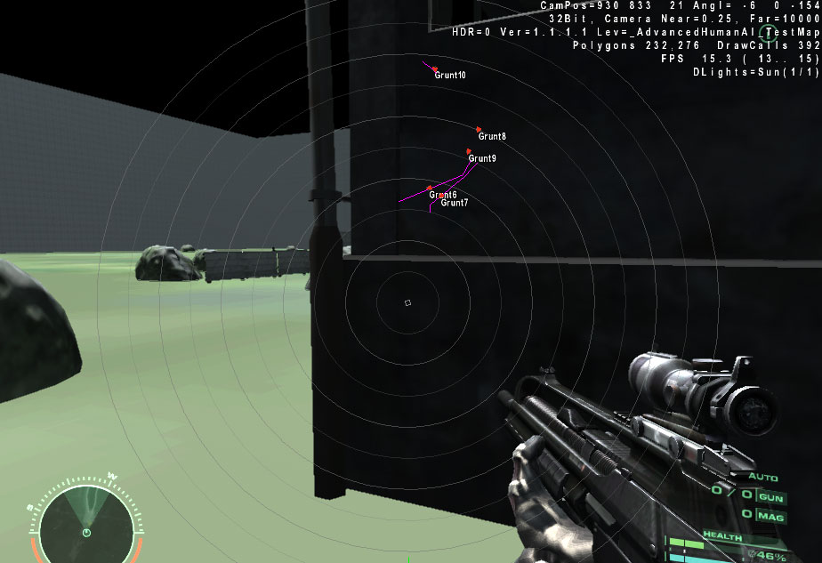
ai_DrawRadar
Draws AI radar: 0=no radar, >0 = size of the radar on screen
ai_DrawRadarDist
ai_DrawRadarDist
AI radar draw distance in meters, default=20m.
ai_DrawTrajectory
ai_DrawTrajectory
Record and draw the actual path taken by the agent specified in ai_StatsTarget.
Path is displayed in aqua, and only a certain length will be displayed, after which
old path gradually disappears as new path is drawn.
0=do not record, 1=record.
ai_StatsDisplayMode
Предоставляет информацию о количестве активных AI, полных обновлениях и запросах TPS, которые происходят в каждом кадре.
ai_StatsDisplayMode
Select display mode for the AI stats manager
Usage: 0 - Hidden, 1 - Show
Система сущностей
es_ProfileEntities
es_profileentities
Usage: es_profileentities 1,2,3
Default is 0 (off).
es_DebugTimers
es_DebugTimers
This is for profiling and debugging (for game coders and level designer)
By enabling this you get a lot of console printouts that show all entities that receive OnTimer
events - it's good to minimize the call count. Certain entities might require this feature and
using less active entities can often be defined by the level designer.
Usage: es_DebugTimers 0/1